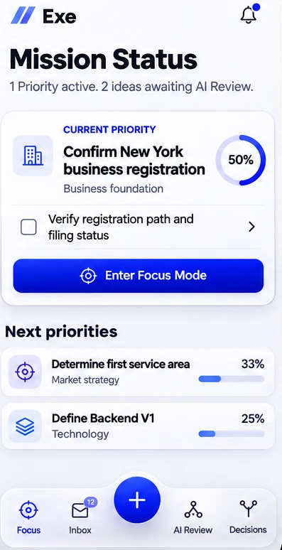
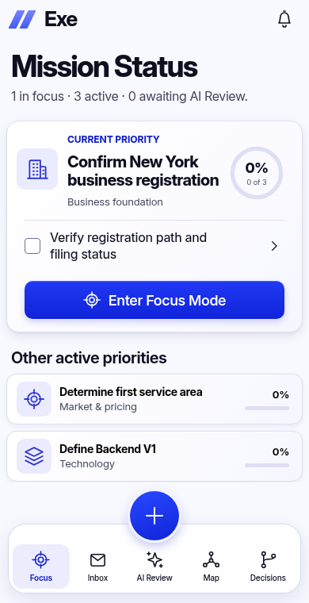
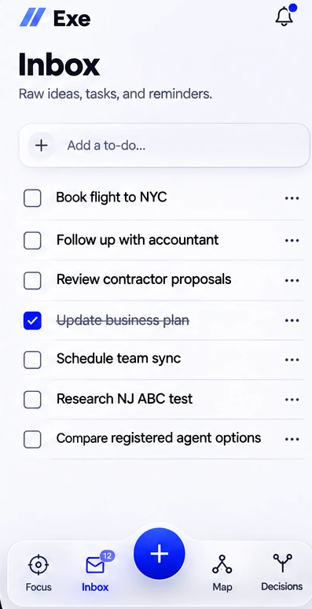
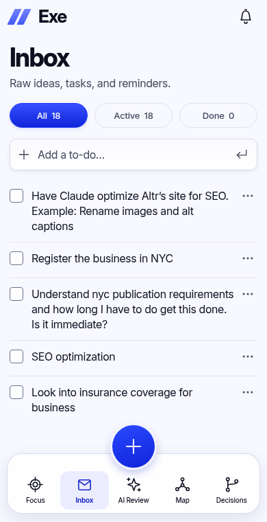
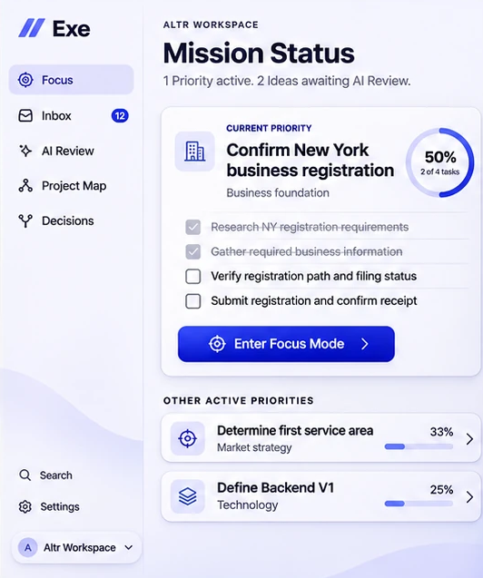
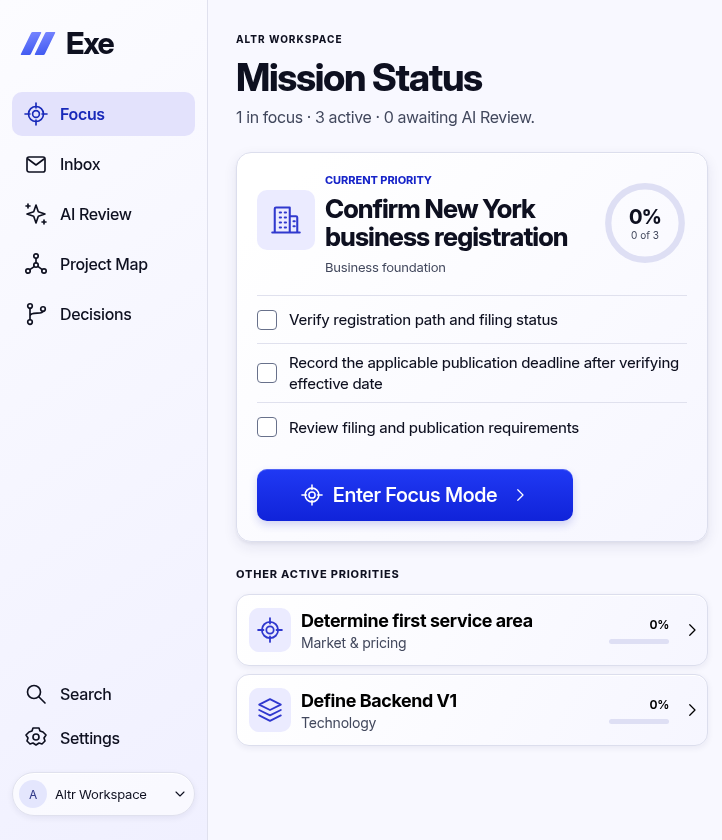
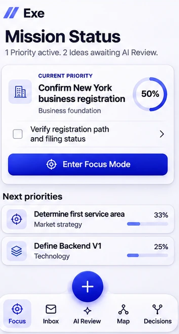

Exe design master comparisonsMobile Focus
Mobile UI areas normalized to the same width; no device frame or browser chrome. Real text and zero progress retained.

Approved reference · illustrative data
Coded design master · initial zero progressMobile Inbox
Mobile UI areas normalized to the same width; no device frame or browser chrome. Real text and zero progress retained.

Approved reference · illustrative data
Coded design master · initial zero progressDesktop Focus
Desktop normalized by the visible sidebar (157 raster px to 208 CSS px). Real text and zero progress retained.

Approved reference · illustrative data
Coded design master · initial zero progressFloating Focus
Mobile UI areas normalized to the same width; no device frame or browser chrome. Real text and zero progress retained.

Approved reference · illustrative data Coded design master · initial zero progress
Coded design master · initial zero progress